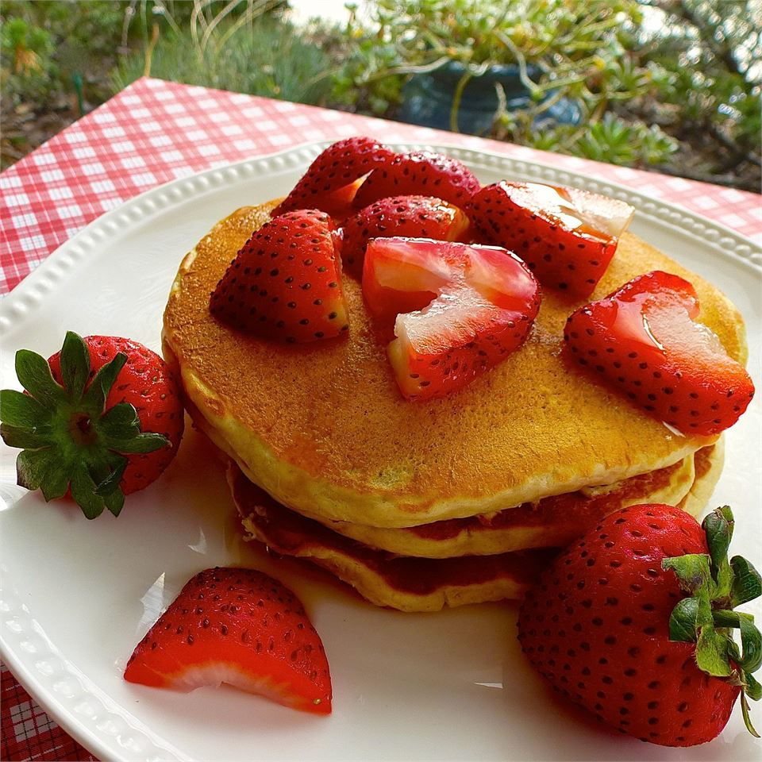

Oatmeal Pancakes!

Oatmeal Pancakes!
Some wonderfully fluffy pancakes to get your morning started with! delightfully fluffy cakes covered in maple syrup and your fresh fruit of choice!
Ingredients
1/2 cup all-purpose flour
1/2 cup quick cooking oats
1 tablespoon baking powder
1 teaspoon vanilla extract
2 tablespoons vegetable oil
Directions
Place flour, oats, sugar, baking powder, baking soda, salt, buttermilk, vanilla, oil and egg in a food processor and puree until smooth.
Head a lightly oiled griddle or frying pan over medium high heat. Pour or scoop batter onto the griddle, using approximately 1/4 cup for each pancake. Brown on both sides and serve hot.
home